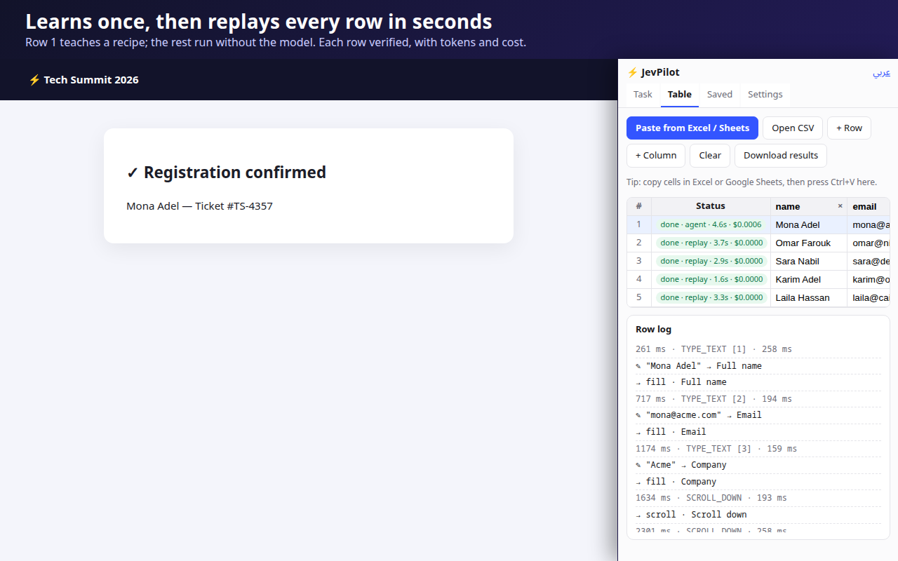
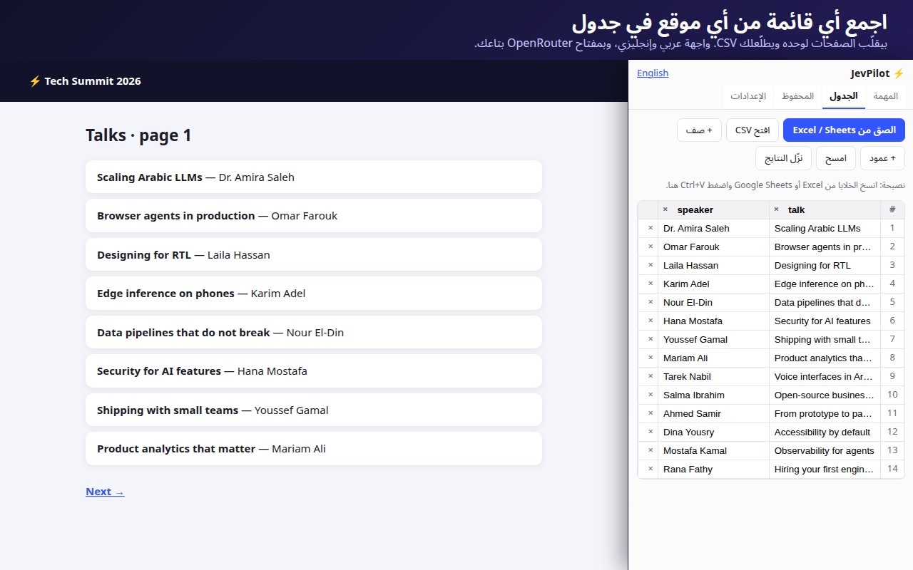

What it does
English or Arabic. “Prepare” reads the page, plans the task, and asks for anything missing.
The first run teaches a recipe. After that, runs replay in seconds without AI calls, and choices follow your data.
Paste cells from Excel or Google Sheets. It fills the form once per row and gives you a results CSV.
Gathers results, products or listings across paginated pages into a table.
An independent check reads the final page. Anything doubtful is flagged with evidence. It asks before submit or pay.
Bring your own OpenRouter key and pay the provider directly. A live meter shows tokens and cost per step.
See it work


Pricing
Everything above, with your own OpenRouter key. You pay only the model provider, usually a fraction of a cent per task.
JevPilot Pro for heavy and team use. The license key activates inside the extension.
بالعربي
JevPilot وكيل ذكاء اصطناعي جوه كروم بتاعك. قولّه عايز إيه بالعربي أو الإنجليزي، وهو يدوس ويكتب ويبعت على المواقع بحساباتك. بيتعلّم المهمة مرة وبيعيدها في ثواني، وبيملا الفورمز من جداول Excel، وبيجمع القوائم في جدول. بمفتاح OpenRouter بتاعك، ومفيش أي سيرفر في النص.